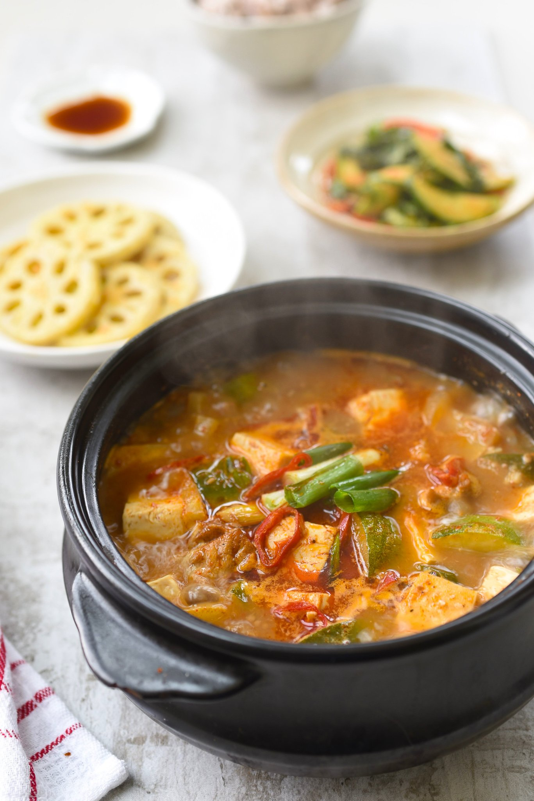

Doenjang Jjigae
Doenjang Jjigae

Description
Doenjang Jjigae is one of the most popular staple dishes in korean cuisine. It is a stew made from a base of doenjang, fermented soybean paste.
Ingredients
- 1 medium potato, peeled and cut into 1/2 inch cubes
- 1 medium onion, cut into 1/2 inch pieces
- 1 small zucchini, cut into 1/2 inch pieces
- 1 green Korean chili pepper, stemmed and chopped
- 4 garlic cloves, minced
- 4 large shrimp, shelled, deveined, washed and coarsely chopped
- 2 and 1/4 cups water
- 7 dried anchovies, gutted
- 5 Tbsp fermented soybean paste (Doenjang)
- 6 ounces medium-firm tofu, cut into 1/2 inch cubes
- 2 green onions, chopped
Steps
- Combine the potato, onion, zucchini, chili pepper, garlic and shrimp in a 1 and 1/2 quart heavy pot.
- Wrap dried anchovies in cheesecloth, and put into pot with other ingredients. Add water and cover.
- Cook over medium-high heat for 15 minutes until boiling.
- Stir in soybean paste, mixing well. Cover and cook for 20 minutes over medium heat.
- Add tofu and cook for another 3 minutes. Discard anchovy pouch.
- Sprinkle with green onions and serve with rice.